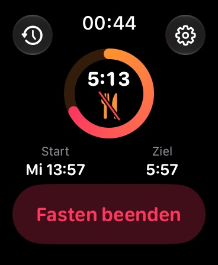
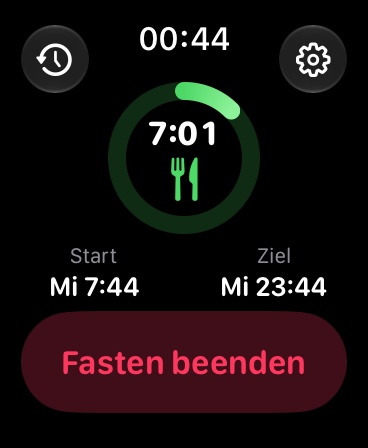
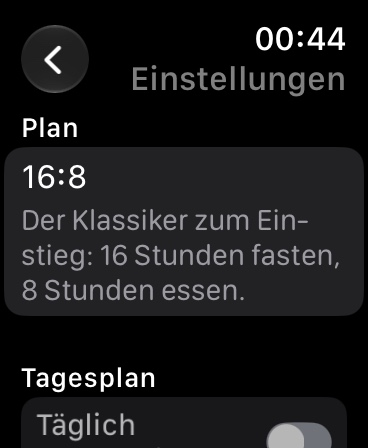
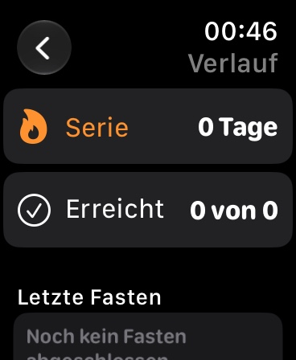

Intervallfasten am Handgelenk
Starte dein Fasten mit einem Tipp, sieh Restzeit und Phase direkt am Zifferblatt und werde zur Essenszeit sanft benachrichtigt. Ohne Konto, unabhängig vom iPhone.




FastingTracker ist der schlanke Intervallfasten-Timer für die Apple Watch. Alles läuft direkt auf der Uhr: unabhängig vom iPhone, kein Konto, keine Werbung.
Wähle einen Plan, tippe auf "Fasten starten" und sieh auf einen Blick, wie lange es noch dauert. Ein farbiger Ring zeigt Fortschritt und Phase: Fasten, Essensfenster oder bereit.
Ring, Restzeit und Phase direkt auf dem Zifferblatt: kreisförmig, Ecke, rechteckig und als Textzeile. Der Ring läuft live mit, ohne die Uhr zu fordern.
Auf Wunsch eine Erinnerung eine Stunde vor Fastenende und zum Fastenende, damit du den Moment zum Essen nicht verpasst.
Die letzten 30 Fasten, deine aktuelle Serie und wie oft du dein Ziel erreicht hast.
Zu spät gestartet? Setze die Startzeit nachträglich auf den echten Beginn zurück.
Einmalkauf, keine Abos, keine In-App-Käufe, keine Werbung. Alle Daten bleiben auf deiner Uhr. Keine Anmeldung, keine Analyse, kein Tracking.
Hinweis: FastingTracker ist kein medizinisches Produkt und ersetzt keine ärztliche Beratung. Fasten ist nicht für jeden geeignet, etwa bei Schwangerschaft, Essstörungen, Diabetes oder Untergewicht. Sprich bei Vorerkrankungen vorher mit deiner Ärztin oder deinem Arzt.